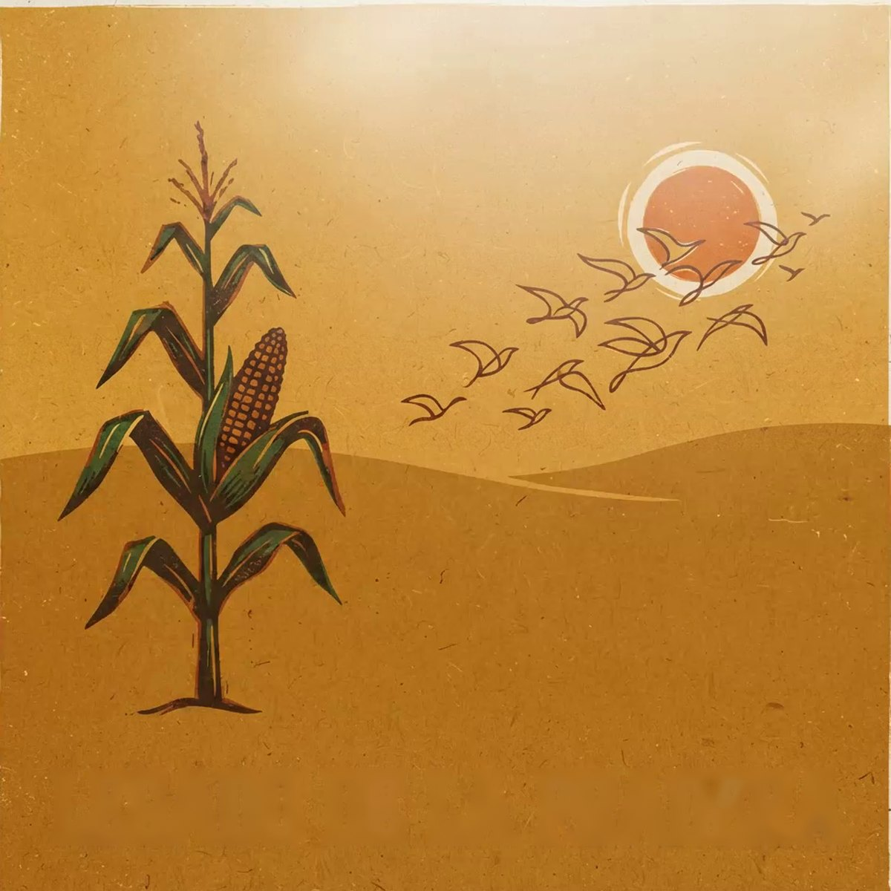

presents
INOKA
The Breath of the Prairie and the People of Illinois
A play by José M. Fernández

With all our students, from Pre-K to 6th grade
The land · The river · The council · A people still here today
Date:
Time:
Place:
· Free admission
“Inoka: The Breath of the Prairie and the People of Illinois” · A play by José M. Fernández · Lumi, www.lumi-educa.com